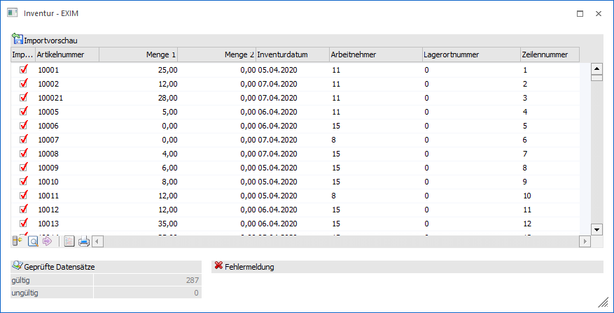
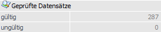
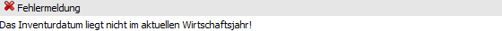
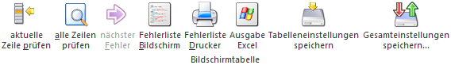
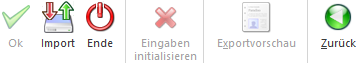

Wenn bei einem Import im "Inventur - EXIM" die Option "Zeilen vor dem Import editieren" ausgewählt wurde, so wird der Bereich "Importvorschau" geöffnet. In diesem ist nach einer Prüfung ersichtlich, welche Inventurerfassungen importiert werden können bzw. welcher Daten nicht korrekt sind.
Hinweis
Die Spalten der Tabelle sind abhängig von der verwendeten Vorlage.

Die im ersten Schritt notwendige Prüfung der Datensätze kann entweder Satzweise oder über alle Zeilen erfolgen. Hierzu stehen die Tabellenbuttons "aktuelle Zeile prüfen" und "alle Zeilen prüfen" zur Verfügung.
Bei gültigen Datensätzen wird die Checkbox der Spalte "Import" automatisch aktiviert und sind somit für den Import selektiert.
Wenn Zeilen als ungültig erkannt werden, so werden die entsprechenden Gründe im Protokoll (siehe Buttons "Fehlerliste Bildschirm" und "Fehlerliste Drucker") bzw. im Bereich "Fehlermeldung" angezeigt.
Hinweis
In der Tabelle können alle Felder editiert werden, um ggfs. vorhandene Fehler (z.B. falsches Datum oder falsche Artikelnummer) zu bereinigen.
Geprüfte Datensätze

Ø gültig / ungültig
An dieser Stelle wird die Anzahl der gültigen bzw. ungültigen Inventurerfassungen angezeigt. Hierbei ist zu beachten, dass nicht geprüfte Erfassungen bis zur erfolgreichen Prüfung auch als "ungültig" angesehen werden.
Fehlermeldung

Ø Fehlermeldung
In diesem Bereich wird bei einer fehlerhaften Inventurerfassung die entsprechende Fehlermeldung angezeigt. Liegen bei einer Erfassung mehrere Fehler gleichzeitig vor, so wird das schwerwiegendste Problem dargestellt.
Tabellenbuttons

Ø aktuelle Zeile prüfen
Die aktuelle Zeile wird auf Korrektheit kontrolliert.
Hinweis
Etwaige Fehler werden im Bereich "Fehlermeldung" ausgewiesen.
Ø alle Zeilen prüfen
Alle Inventurerfassungszeilen werden auf Korrektheit kontrolliert.
Hinweis
Etwaige Fehler werden im Bereich "Fehlermeldung" ausgewiesen.
Ø nächster Fehler
Mit Hilfe dieser Funktion wird direkt zur nächsten fehlerhaften Erfassungszeile gewechselt.
Ø Fehlerliste Bildschirm
Durch Anwahl dieses Buttons wird eine Liste der fehlerhaften Inventurerfassungszeilen am Bildschirm ausgegeben.
Ø Fehlerliste Drucker
Durch Anwahl dieses Buttons wird eine Liste der fehlerhaften Inventurerfassungszeilen auf den Drucker ausgegeben.
Ø Ausgabe Excel
Durch Anwahl des Buttons "Ausgabe Excel" wird der Inhalt der Tabelle nach Microsoft Excel übergeben.
Ø Tabelleneinstellungen speichern
Die Spalten einer Tabelle können grundsätzlich an beliebige Positionen verschoben, bzw. in der Breite entsprechend angepasst werden. Durch Anwahl des Buttons "Tabelleneinstellungen speichern" werden die Einstellungen benutzerspezifisch gespeichert und bei dem nächsten Aufruf des Programmpunktes wieder vorgeschlagen.
Ø Gesamteinstellungen speichern
Im Gegensatz zu "Tabelleneinstellungen speichern" können mit "Gesamteinstellungen speichern" mehrere Tabellenaufbauten gespeichert und nach Wunsch geladen werden. Zusätzlich werden Sonderfunktionen der Tabelle (z.B. "Spalte gruppieren") ebenfalls bei der Speicherung bedacht.
Buttons

Ø Ok (nicht bei Importvorschau)
Durch Anwahl des Buttons "Ok" bzw. der Taste F5 wird der Export bzw. Import durchgeführt.
Ø Import
Mit Hilfe des Buttons "Import" im Prüfbereich (siehe Option "Zeilen vor dem Import editieren" bzw. Button "Ok") wird der Import durchgeführt.
Ø Ende
Durch Drücken des Buttons "Ende" bzw. der Taste ESC wird das Fenster geschlossen und alle Einstellungen verworfen.
Ø Eingaben initialisieren (nicht bei Importvorschau)
Durch Anklicken dieses Buttons werden alle getätigten Einstellungen verworfen wodurch eine neue Selektion durchgeführt werden kann.
Ø Exportvorschau (nicht bei Importvorschau)
Durch Drücken des Buttons "Exportvorschau" werden in einem neuen Fenster die Datensätze, die auf Grund der vorgenommenen Einstellungen exportiert werden würden, angezeigt.
Ø Zurück
Durch Anwahl des Buttons "Zurück" wird in das Hauptfenster vom Inventur EXIM zurückgewechselt.